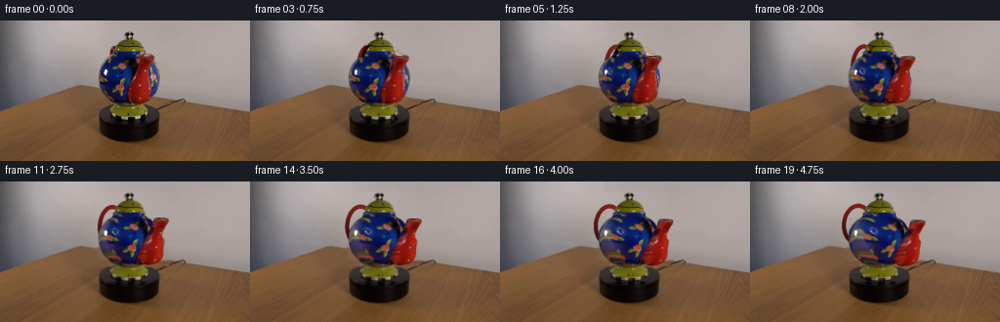
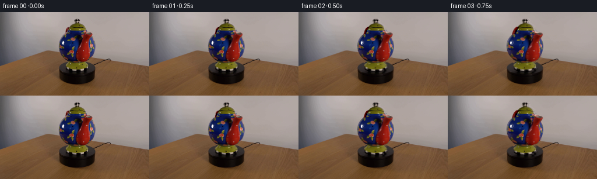
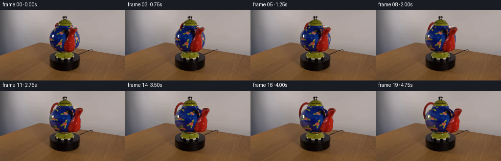
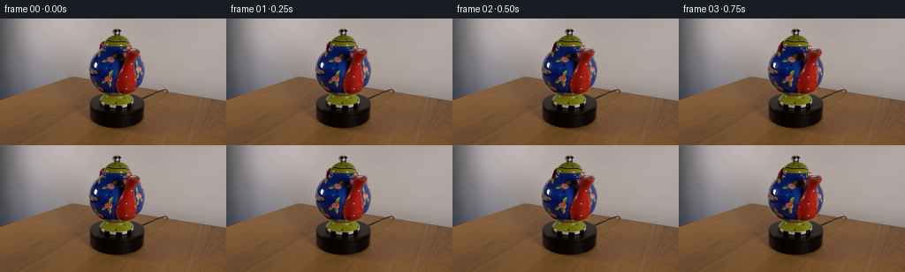

CODING AGENTS AS PIXEL WORLD MODELS
traex/GPT-6.1-Sol · 0177
点击播放 · 原生 RGB 像素
逐轮保存的候选
回放视频、检查图与代码变化。
每份候选均可单独播放。实际图片检查记录在下方工具轨迹中。
候选 01播放与检查图
点击播放 · 原生 RGB 像素

展开代码变化
--- 上一保存版本
+++ 本次保存版本
@@ -0,0 +1,206 @@
+from pathlib import Path
+import numpy as np
+import cv2
+from scipy.interpolate import PchipInterpolator
+from scipy.ndimage import gaussian_filter, distance_transform_edt
+from PIL import Image
+import artifact_io
+
+ROOT=Path(__file__).resolve().parent
+W,H=256,144
+S=3
+im=np.array(Image.open(ROOT/'first_frame.png').convert('RGB')).astype(np.float32)
+h,w=H*S,W*S
+Y,X=np.mgrid[:h,:w].astype(np.float32)
+X=(X+.5)/S-.5; Y=(Y+.5)/S-.5
+
+def remap(a,x,y):
+ return cv2.remap(a.astype(np.float32), x.astype(np.float32),y.astype(np.float32),cv2.INTER_LINEAR,borderMode=cv2.BORDER_REPLICATE)
+
+def polygon(points):
+ a=np.zeros((h,w),np.uint8)
+ cv2.fillPoly(a,[np.rint((np.array(points)+.5)*S-.5).astype(np.int32)],255)
+ return gaussian_filter(a.astype(np.float32)/255,.55)
+
+def profile(points,y):
+ return PchipInterpolator(*np.array(points).T,extrapolate=False)(np.clip(y,points[0][0],points[-1][0]))
+
+# Recover the stationary tabletop and wall, without changing the platform.
+bg=im.copy()
+for y in range(10,87):
+ left=np.median(im[y,88:98],axis=0); right=np.median(im[y,173:184],axis=0)
+ for x in range(99,173):
+ a=(x-93)/85
+ bg[y,x]=left*(1-a)+right*a
+# The foot is on the dark, oval top of the stationary turntable.
+for y in range(85,103):
+ for x in range(112,153):
+ bg[y,x]=np.median(im[y,np.r_[max(102,112-(y-85)//2):112,153:min(163,155+(y-85)//2)]],axis=0)
+# Restrict the restoration to the original object, preserving all static details.
+oldpoly=[(129,11),(136,11),(137,17),(139,19),(143,21),(146,24),(148,30),(149,33),(156,33),(159,36),(159,42),(162,47),(164,55),(164,65),(162,71),(160,75),(157,79),(152,83),(146,85),(150,87),(152,91),(152,96),(150,98),(144,100),(143,102),(121,102),(116,100),(113,96),(112,91),(115,88),(117,85),(113,83),(108,79),(104,74),(101,68),(100,59),(101,50),(103,45),(107,40),(111,36),(111,32),(112,28),(114,25),(119,25),(121,22),(125,19),(128,18),(126,15),(126,12)]
+oldmask=polygon(oldpoly)
+original=remap(im,X,Y)
+background=remap(bg,X,Y)
+# Clean photograph used as an image-based albedo for the porcelain body.
+bodytex=im.copy()
+# Red upturned spout: the image contains its lip, curved tube and glossy sides.
+spoints=[(83.8,8.6,1.2,27),(82,9.5,7.7,28),(78,10.4,11.3,29),(74,10.9,12.3,30),(70,11.1,12.1,31),(66,11.2,11.6,32),(62,13.0,10.4,33),(58,13.2,10.0,34),(54,13.1,7.4,35),(50,13.5,6.9,36),(46,15.0,7.2,36.8),(42,16.8,7.3,37.4),(39,18.0,8.0,38),(36.5,18.4,7.8,38.5),(34.5,18.0,5.8,38.8)]
+spoints=spoints[::-1]
+sp_y=np.array([p[0] for p in spoints]); sp_c=PchipInterpolator(sp_y,[p[1] for p in spoints]);sp_r=PchipInterpolator(sp_y,[p[2] for p in spoints]);sp_z=PchipInterpolator(sp_y,[p[3] for p in spoints])
+sy,sx=np.mgrid[:H,:W].astype(np.float32)
+sp_rr=sp_r(np.clip(sy,sp_y[0],sp_y[-1]));sp_cc=132+sp_c(np.clip(sy,sp_y[0],sp_y[-1]))
+spmask=np.clip(sp_rr+.55-abs(sx-sp_cc),0,1)*((sy>=34)&(sy<=84))
+# Continue the blue floral glaze behind the foreground spout from visible glaze.
+mirror=remap(im,264-sx,sy)
+for channel in range(3):
+ bodytex[:,:,channel]=bodytex[:,:,channel]*(1-spmask)+mirror[:,:,channel]*spmask
+# Fill the few neck pixels formerly hidden by the spout mouth/handle.
+for yy in range(32,41):
+ for xx in range(113,159):
+ if xx<117 and im[yy,xx,0]>im[yy,xx,2]+20:
+ bodytex[yy,xx]=im[yy,min(132,xx+10)]
+# Specular reflections stay with the lighting, not with the painted flowers.
+wh=(sy>47)&(sy<58)&(sx>103)&(sx<112)&(im.min(axis=2)>170)
+spec=np.zeros_like(im)
+for yy,xx in zip(*np.where(wh)):
+ c=(im[yy, max(101,xx-3)]+im[yy,min(115,xx+4)])/2
+ spec[yy,xx]=im[yy,xx]-c
+ bodytex[yy,xx]=c
+spec_hi=remap(spec,X,Y)
+# The blue vessel's surface of revolution, in photograph coordinates.
+rpoints=[(31.5,16.7),(34,17),(36,18.0),(38,21.5),(40,24.0),(42,26.0),(46,28.6),(50,30.7),(54,31.5),(58,31.7),(62,31.4),(66,30.4),(70,28.9),(74,26.8),(78,23.3),(82,18.9),(84,15),(85.5,8)]
+r=profile(rpoints,Y).astype(np.float32)
+q=np.clip((X-132)/r,-1,1)
+phi=np.arcsin(q)
+bodyalpha=np.clip((r-abs(X-132))+.45,0,1)*np.clip((Y-31.0)*2,0,1)*np.clip((86-Y)*2,0,1)
+bodyalpha=gaussian_filter(bodyalpha,.45)
+# Original lid, ring knob, and foot are axially symmetric and keep their highlights.
+lidmask=polygon([(129,11),(136,11),(138,18),(141,20),(145,23),(146,26),(147,30),(148,32),(143,32),(135,31),(125,32),(117,32),(118,27),(120,24),(123,21),(127,19),(128,18),(126,15),(127,12)])
+footmask=polygon([(121,83),(139,84),(145,85),(149,87),(151,90),(152,94),(151,97),(149,98),(144,98),(144,101),(139,102),(126,101),(120,102),(117,100),(113,98),(113,94),(112,91),(113,88),(116,85)])
+# Composite a small ring-shaped handle, behind the vessel, by projecting analytic
+# geometry. Its plane starts almost edge-on; a clockwise turn reveals the loop.
+def handle(theta):
+ a=np.zeros((h,w),np.float32); c=np.zeros((h,w,3),np.float32)
+ n=np.array([-.45,-np.sqrt(1-.45**2)])
+ ct,st=np.cos(theta),np.sin(theta)
+ n=np.array([n[0]*ct+n[1]*st,-n[0]*st+n[1]*ct])
+ ts=np.linspace(0,2*np.pi,251)
+ radial=24+15*np.cos(ts)
+ yy=46-19*np.sin(ts)
+ xx=132+radial*n[0]; zz=radial*n[1]
+ # The source top of the handle is at y 28, near the back of the lid.
+ yy=yy-.20*(zz+24*.893)
+ order=np.argsort(zz)
+ for j in order:
+ px=int(round((xx[j]+.5)*S-.5)); py=int(round((yy[j]+.5)*S-.5))
+ light=.72+.22*np.sin(ts[j])-.10*np.cos(ts[j])
+ col=tuple(map(float,np.array([133,33,25])*light))
+ rad=int(round(2.1*S))
+ cv2.circle(a,(px,py),rad,1,-1,cv2.LINE_AA)
+ cv2.circle(c,(px,py),rad,col,-1,cv2.LINE_AA)
+ cv2.circle(c,(px-int(S*.45),py-int(S*.55)),max(1,int(S*.6)),tuple(map(float,np.array(col)*1.2+np.array([25,15,12]))),-1,cv2.LINE_AA)
+ a=gaussian_filter(a,.6);c=gaussian_filter(c,(.6,.6,0))
+ return a,c
+
+# Tube is circular in cross section; projection and photographic texture are
+# evaluated analytically, including newly exposed red glaze.
+def spout(theta):
+ ct,st=np.cos(theta),np.sin(theta)
+ # Solve for the longitudinal center at this projected pixel row.
+ y0=Y.copy()
+ for _ in range(4):
+ yc=np.clip(y0,sp_y[0],sp_y[-1]); xc=sp_c(yc); zc=sp_z(yc)
+ zp=-xc*st+zc*ct
+ y0=Y-.20*(zc-zp)
+ yc=np.clip(y0,sp_y[0],sp_y[-1]);xc=sp_c(yc);zc=sp_z(yc);rr=sp_r(yc)
+ center=132+xc*ct+zc*st
+ d=X-center
+ cir=np.sqrt(np.maximum(rr*rr-d*d,0))
+ xs=132+xc+d*ct-cir*st
+ srcz=-d*st+cir*ct
+ ys=yc+.20*(cir-srcz)
+ # Clamp to the photographed colored tube, so the new side cannot sample wall.
+ ry=np.clip(ys,35.3,83.1)
+ rc=132+sp_c(ry);rad=sp_r(ry)
+ xs=np.clip(xs,rc-rad+1.05,rc+rad-1.05)
+ color=remap(im,xs,ry)
+ # Upper rim's central hollow retains background through its open aperture.
+ # Sample glaze rather than porcelain if a sampling ray lands at a rim highlight.
+ targetshade=.76+.30*(d/np.maximum(rr,1))+.22*(cir/np.maximum(rr,1))
+ sq=(xs-rc)/np.maximum(rad,1)
+ oldshade=.76+.30*sq+.22*np.sqrt(np.maximum(0,1-sq*sq))
+ color*=np.clip(targetshade/np.maximum(oldshade,.45),.75,1.3)[...,None]
+ alpha=np.clip(rr+.45-abs(d),0,1)*np.clip((y0-sp_y[0]+.3)*2,0,1)*np.clip((sp_y[-1]-y0+.3)*2,0,1)
+ alpha=gaussian_filter(alpha,.50)
+ # Re-render the actual hollow top lip as a thin glossy ellipse. The plane of
+ # the lip remains horizontal, with constant camera elevation.
+ tipx=132+sp_c(35)*ct+sp_z(35)*st
+ tipy=35+.20*(sp_z(35)-(-sp_c(35)*st+sp_z(35)*ct))
+ lip=np.exp(-(((X-tipx)/6.8)**2+((Y-tipy)/1.75)**2)*2)
+ hole=((X-tipx)/5.15)**2+((Y-(tipy-.2))/1.00)**2
+ holealpha=np.clip((1-hole)*3,0,1)*alpha
+ # Dark red interior and a rear rim, like the opening in the starting photograph.
+ interior=np.stack([48+20*np.clip((X-tipx+5)/10,0,1),23+6*np.clip((X-tipx+5)/10,0,1),18+4*np.clip((X-tipx+5)/10,0,1)],axis=-1)
+ color=color*(1-holealpha[...,None])+interior*holealpha[...,None]
+ return alpha.astype(np.float32),color.astype(np.float32)
+
+def render(theta):
+ ct,st=np.cos(theta),np.sin(theta)
+ a,c=handle(theta)
+ out=background*(1-a[...,None])+c*a[...,None]
+ f=phi-theta
+ sf=np.sin(f);cf=np.abs(np.cos(f))
+ xs=132+r*sf
+ ys=Y+.20*r*(np.cos(phi)-cf)
+ ys=np.clip(ys,32,85)
+ sr=profile(rpoints,ys)
+ xs=np.clip(xs,132-sr+1.0,132+sr-1.0)
+ color=remap(bodytex,xs,ys)
+ sourceq=np.clip((xs-132)/sr,-1,1)
+ shade=.82+.18*np.sqrt(np.maximum(0,1-q*q))+.19*q
+ oldshade=.82+.18*np.sqrt(np.maximum(0,1-sourceq*sourceq))+.19*sourceq
+ color*=np.clip(shade/oldshade,.72,1.3)[...,None]
+ color=np.clip(color+spec_hi,0,255)
+ out=out*(1-bodyalpha[...,None])+color*bodyalpha[...,None]
+ # Yellow ceramic foot turns without moving its point of support.
+ fa=footmask
+ fxs=132+(X-132)*np.cos(theta*.35)-np.sqrt(np.maximum(20**2-(X-132)**2,0))*np.sin(theta*.35)
+ fxs=np.clip(fxs,113,151)
+ footc=remap(im,fxs,Y)
+ # Preserve the pedestal silhouette and its contact shadows.
+ footc=.3*footc+.7*original
+ out=out*(1-fa[...,None])+footc*fa[...,None]
+ la=lidmask
+ out=out*(1-la[...,None])+original*la[...,None]
+ a,c=spout(theta)
+ out=out*(1-a[...,None])+c*a[...,None]
+ return cv2.resize(np.clip(out,0,255),(W,H),interpolation=cv2.INTER_AREA)
+
+# Photographic reconstruction correction is transported with the rotation for
+# the first part of the shot. Thus frame zero is exact and the motion starts
+# continuously, without a change of exposure, background, or camera.
+reference=render(0)
+residual=im-reference
+frames=[]
+for i in range(20):
+ theta=np.deg2rad(42)*(i/19)
+ generated=render(theta)
+ if i==0:
+ frame=im.astype(np.uint8)
+ else:
+ # Compensate approximation error where it is still geometrically relevant.
+ mx=132+(sx-132)*np.cos(theta)-np.sqrt(np.maximum(31**2-(sx-132)**2,0))*np.sin(theta)
+ my=sy
+ trans=remap(residual,mx,my)
+ weight=np.exp(-((theta/np.deg2rad(16))**2))
+ generated+=trans*weight
+ # Static background pixels remain exactly equal to the supplied photograph.
+ moving=cv2.resize(np.maximum(oldmask,np.clip((abs(X-132)<65)&(Y>=10)&(Y<=102),0,1).astype(np.float32)),(W,H),interpolation=cv2.INTER_AREA)
+ # No alteration outside the local demonstration apparatus.
+ generated=generated*moving[...,None]+im*(1-moving[...,None])
+ frame=np.clip(np.rint(generated),0,255).astype(np.uint8)
+ frames.append(frame)
+frames=np.stack(frames)
+artifact_io.save(frames,ROOT)
+if __name__=='__main__':
+ print('Saved',frames.shape,frames.dtype)
候选 02播放与检查图
点击播放 · 原生 RGB 像素


展开代码变化
--- 上一保存版本 +++ 本次保存版本 @@ -15,7 +15,7 @@ X=(X+.5)/S-.5; Y=(Y+.5)/S-.5 def remap(a,x,y): - return cv2.remap(a.astype(np.float32), x.astype(np.float32),y.astype(np.float32),cv2.INTER_LINEAR,borderMode=cv2.BORDER_REPLICATE) + return cv2.remap(a.astype(np.float32), x.astype(np.float32),y.astype(np.float32),cv2.INTER_CUBIC,borderMode=cv2.BORDER_REPLICATE) def polygon(points): a=np.zeros((h,w),np.uint8) @@ -40,9 +40,14 @@ oldpoly=[(129,11),(136,11),(137,17),(139,19),(143,21),(146,24),(148,30),(149,33),(156,33),(159,36),(159,42),(162,47),(164,55),(164,65),(162,71),(160,75),(157,79),(152,83),(146,85),(150,87),(152,91),(152,96),(150,98),(144,100),(143,102),(121,102),(116,100),(113,96),(112,91),(115,88),(117,85),(113,83),(108,79),(104,74),(101,68),(100,59),(101,50),(103,45),(107,40),(111,36),(111,32),(112,28),(114,25),(119,25),(121,22),(125,19),(128,18),(126,15),(126,12)] oldmask=polygon(oldpoly) original=remap(im,X,Y) -background=remap(bg,X,Y) +background=original*(1-oldmask[...,None])+remap(bg,X,Y)*oldmask[...,None] # Clean photograph used as an image-based albedo for the porcelain body. bodytex=im.copy() +# Remove the small stationary white studio light from the rotating albedo. +specregion=np.zeros((H,W),np.uint8) +specregion[49:57,105:111]=255 +bodytex=cv2.inpaint(bodytex.astype(np.uint8),specregion,3,cv2.INPAINT_TELEA).astype(np.float32) +rawclean=bodytex.copy() # Red upturned spout: the image contains its lip, curved tube and glossy sides. spoints=[(83.8,8.6,1.2,27),(82,9.5,7.7,28),(78,10.4,11.3,29),(74,10.9,12.3,30),(70,11.1,12.1,31),(66,11.2,11.6,32),(62,13.0,10.4,33),(58,13.2,10.0,34),(54,13.1,7.4,35),(50,13.5,6.9,36),(46,15.0,7.2,36.8),(42,16.8,7.3,37.4),(39,18.0,8.0,38),(36.5,18.4,7.8,38.5),(34.5,18.0,5.8,38.8)] spoints=spoints[::-1] @@ -51,7 +56,7 @@ sp_rr=sp_r(np.clip(sy,sp_y[0],sp_y[-1]));sp_cc=132+sp_c(np.clip(sy,sp_y[0],sp_y[-1])) spmask=np.clip(sp_rr+.55-abs(sx-sp_cc),0,1)*((sy>=34)&(sy<=84)) # Continue the blue floral glaze behind the foreground spout from visible glaze. -mirror=remap(im,264-sx,sy) +mirror=remap(rawclean,264-sx,sy) for channel in range(3): bodytex[:,:,channel]=bodytex[:,:,channel]*(1-spmask)+mirror[:,:,channel]*spmask # Fill the few neck pixels formerly hidden by the spout mouth/handle. @@ -65,7 +70,8 @@ for yy,xx in zip(*np.where(wh)): c=(im[yy, max(101,xx-3)]+im[yy,min(115,xx+4)])/2 spec[yy,xx]=im[yy,xx]-c - bodytex[yy,xx]=c + # Highlight has already been removed before synthesizing hidden glaze. + pass spec_hi=remap(spec,X,Y) # The blue vessel's surface of revolution, in photograph coordinates. rpoints=[(31.5,16.7),(34,17),(36,18.0),(38,21.5),(40,24.0),(42,26.0),(46,28.6),(50,30.7),(54,31.5),(58,31.7),(62,31.4),(66,30.4),(70,28.9),(74,26.8),(78,23.3),(82,18.9),(84,15),(85.5,8)] @@ -168,7 +174,7 @@ fxs=np.clip(fxs,113,151) footc=remap(im,fxs,Y) # Preserve the pedestal silhouette and its contact shadows. - footc=.3*footc+.7*original + footc=original out=out*(1-fa[...,None])+footc*fa[...,None] la=lidmask out=out*(1-la[...,None])+original*la[...,None] @@ -183,7 +189,7 @@ residual=im-reference frames=[] for i in range(20): - theta=np.deg2rad(42)*(i/19) + theta=np.deg2rad(32)*(i/19) generated=render(theta) if i==0: frame=im.astype(np.uint8) @@ -192,8 +198,12 @@ mx=132+(sx-132)*np.cos(theta)-np.sqrt(np.maximum(31**2-(sx-132)**2,0))*np.sin(theta) my=sy trans=remap(residual,mx,my) + # The rotationally symmetric lid, supporting foot, and scenery are fixed. + static=cv2.resize(np.maximum(lidmask,footmask),(W,H),interpolation=cv2.INTER_AREA) + trans=trans*(1-static[...,None])+residual*static[...,None] weight=np.exp(-((theta/np.deg2rad(16))**2)) generated+=trans*weight + generated=generated*(1-static[...,None])+im*static[...,None] # Static background pixels remain exactly equal to the supplied photograph. moving=cv2.resize(np.maximum(oldmask,np.clip((abs(X-132)<65)&(Y>=10)&(Y<=102),0,1).astype(np.float32)),(W,H),interpolation=cv2.INTER_AREA) # No alteration outside the local demonstration apparatus.
候选 03播放与检查图
候选 04播放与检查图
点击播放 · 原生 RGB 像素


展开代码变化
--- 上一保存版本
+++ 本次保存版本
@@ -64,6 +64,13 @@
for xx in range(113,159):
if xx<117 and im[yy,xx,0]>im[yy,xx,2]+20:
bodytex[yy,xx]=im[yy,min(132,xx+10)]
+# The upturned mouth partly covers the neck in the initial view; it is not
+# a painted red mark on the vessel.
+for yy in range(32,39):
+ for xx in range(141,159):
+ if bodytex[yy,xx,0]>bodytex[yy,xx,2]+15:
+ sourcex=max(119,min(130,264-xx))
+ bodytex[yy,xx]=rawclean[yy,sourcex]
# Specular reflections stay with the lighting, not with the painted flowers.
wh=(sy>47)&(sy<58)&(sx>103)&(sx<112)&(im.min(axis=2)>170)
spec=np.zeros_like(im)
@@ -81,7 +88,7 @@
bodyalpha=np.clip((r-abs(X-132))+.45,0,1)*np.clip((Y-31.0)*2,0,1)*np.clip((86-Y)*2,0,1)
bodyalpha=gaussian_filter(bodyalpha,.45)
# Original lid, ring knob, and foot are axially symmetric and keep their highlights.
-lidmask=polygon([(129,11),(136,11),(138,18),(141,20),(145,23),(146,26),(147,30),(148,32),(143,32),(135,31),(125,32),(117,32),(118,27),(120,24),(123,21),(127,19),(128,18),(126,15),(127,12)])
+lidmask=polygon([(129,11),(136,11),(138,18),(141,20),(145,23),(146,26),(147,30),(148,30.7),(143,30.7),(135,31),(125,31),(117,30.7),(118,27),(120,24),(123,21),(127,19),(128,18),(126,15),(127,12)])
footmask=polygon([(121,83),(139,84),(145,85),(149,87),(151,90),(152,94),(151,97),(149,98),(144,98),(144,101),(139,102),(126,101),(120,102),(117,100),(113,98),(113,94),(112,91),(113,88),(116,85)])
# Composite a small ring-shaped handle, behind the vessel, by projecting analytic
# geometry. Its plane starts almost edge-on; a clockwise turn reveals the loop.
@@ -142,12 +149,19 @@
# the lip remains horizontal, with constant camera elevation.
tipx=132+sp_c(35)*ct+sp_z(35)*st
tipy=35+.20*(sp_z(35)-(-sp_c(35)*st+sp_z(35)*ct))
- lip=np.exp(-(((X-tipx)/6.8)**2+((Y-tipy)/1.75)**2)*2)
- hole=((X-tipx)/5.15)**2+((Y-(tipy-.2))/1.00)**2
- holealpha=np.clip((1-hole)*3,0,1)*alpha
- # Dark red interior and a rear rim, like the opening in the starting photograph.
- interior=np.stack([48+20*np.clip((X-tipx+5)/10,0,1),23+6*np.clip((X-tipx+5)/10,0,1),18+4*np.clip((X-tipx+5)/10,0,1)],axis=-1)
- color=color*(1-holealpha[...,None])+interior*holealpha[...,None]
+ outer=((X-tipx)/7.2)**2+((Y-tipy)/2.55)**2
+ mouthalpha=np.clip((1-outer)*4,0,1)
+ # Glossy ceramic lip surrounds the open, deep brown-red interior.
+ rimshade=.8+.22*np.clip((X-tipx+7)/14,0,1)+.12*np.clip((tipy-Y)/2.5,0,1)
+ rimcolor=np.array([160,56,42],np.float32)[None,None,:]*rimshade[...,None]
+ hole=((X-tipx)/5.65)**2+((Y-(tipy-.20))/1.42)**2
+ holealpha=np.clip((1-hole)*4,0,1)
+ interior=np.stack([51+25*np.clip((X-tipx+5)/10,0,1),27+7*np.clip((X-tipx+5)/10,0,1),22+5*np.clip((X-tipx+5)/10,0,1)],axis=-1)
+ mouthcolor=rimcolor*(1-holealpha[...,None])+interior*holealpha[...,None]
+ union=alpha+mouthalpha*(1-alpha)
+ premul=color*alpha[...,None]*(1-mouthalpha[...,None])+mouthcolor*mouthalpha[...,None]
+ color=premul/np.maximum(union[...,None],1e-5)
+ alpha=union
return alpha.astype(np.float32),color.astype(np.float32)
def render(theta):
可观测工具轨迹
实际执行的命令与返回图片。
命令 1exit 0
/bin/bash -lc 'ls -la && cat prompt.txt && cat GENERATION_RULES.md'
命令 2exit 0
/bin/bash -lc "cat artifact_io.py && python - <<'PY'
from PIL import Image
import numpy as np
im=np.array(Image.open('first_frame.png'))
print(im.shape)
print('samples')
for y in range(0,144,8):
print(y,[(x,im[y,x].tolist()) for x in range(0,256,16)])
g=(im.astype(float)@[.299,.587,.114]);chars=' .:-=+*#%@'
for y in range(0,144,2):
print(''.join(chars[int(v*9/256)] for v in g[y,::2]))
PY"命令 3exit 0
/bin/bash -lc "python - <<'PY'
from PIL import Image
import numpy as np
from scipy.ndimage import median_filter
im=np.array(Image.open('first_frame.png')).astype(float)
# colors R red B blue Y yellow W white K black . background
for y in range(8,106):
s=''
for x in range(90,176):
r,g,b=im[y,x]
if r-g>30 and r-b>20:c='R' if r>150 else 'r'
elif b-r>20 and b-g>15:c='B' if b>100 else 'b'
elif r-b>35 and g-b>35:c='Y' if g>110 else 'y'
elif max(r,g,b)-min(r,g,b)<25 and r>190:c='W'
elif max(r,g,b)<55:c='k'
elif r-g>20 and g-b>15:c='t'
elif max(r,g,b)>200:c='w'
elif r<110:c=':'
else:c='.'
s+=c
print('%3d'%y,s)
PY"命令 4exit 0
/bin/bash -lc "python - <<'PY'
from PIL import Image
import numpy as np
im=np.array(Image.open('first_frame.png'))
for y in [14,20,24,28,32,35,38,42,46,50,54,58,62,66,70,74,78,82,86,90,94,98]:
print('\\ny=',y)
for x in range(98,166):
r,g,b=map(int,im[y,x]);print(f'{x}:{r},{g},{b}',end='; ')
print()
PY"命令 5exit 0
/bin/bash -lc "python - <<'PY'
import numpy as np
from PIL import Image
im=np.array(Image.open('first_frame.png')).astype(float)
for y in range(10,101):
# smooth background from row x85:98 and 170:185
bg0=np.median(im[y,85:98],axis=0);bg1=np.median(im[y,170:185],axis=0)
x=np.arange(95,170); bg=bg0[None]+(x[:,None]-92)/85*(bg1-bg0)[None]
diff=np.max(abs(im[y,95:170]-bg),axis=1)
xx=x[diff>35]
if xx.size: print(y,xx[0],xx[-1], 'regions',[(int(x[a]),int(x[b])) for a,b in zip(np.where(np.diff(np.r_[False,diff>35,False].astype(int))==1)[0],np.where(np.diff(np.r_[False,diff>35,False].astype(int))==-1)[0]-1)])
PY"命令 6exit 0
/bin/bash -lc "python - <<'PY'
import numpy as np
from PIL import Image
im=np.array(Image.open('first_frame.png'))
for y in range(10,103):
s=''
for x in range(96,169):
r,g,b=map(int,im[y,x]);v=max(r,g,b)
if b>r+13 and b>g+12:s+='B' if b>100 else ('b' if b>60 else 'v')
elif r>g+27 and r>b+20 and r>65:s+='R' if r>155 else 'r'
elif r>b+25 and g>b+30:s+='Y' if g>110 else 'y'
elif v<30:s+='k'
elif v<70:s+=':'
elif min(r,g,b)>185:s+='W'
elif abs(r-g)<20 and abs(g-b)<20:s+='.'
else:s+=' '
print(f'{y:3} {s}')
PY"命令 7exit 0
/bin/bash -lc "python - <<'PY' import importlib.util for n in ['numpy','scipy','cv2','numba']: print(n, bool(importlib.util.find_spec(n))) PY"
命令 8exit 0
/bin/bash -lc "cat > generate.py <<'PY'
from pathlib import Path
import numpy as np
import cv2
from scipy.interpolate import PchipInterpolator
from scipy.ndimage import gaussian_filter, distance_transform_edt
from PIL import Image
import artifact_io
ROOT=Path(__file__).resolve().parent
W,H=256,144
S=3
im=np.array(Image.open(ROOT/'first_frame.png').convert('RGB')).astype(np.float32)
h,w=H*S,W*S
Y,X=np.mgrid[:h,:w].astype(np.float32)
X=(X+.5)/S-.5; Y=(Y+.5)/S-.5
def remap(a,x,y):
return cv2.remap(a.astype(np.float32), x.astype(np.float32),y.astype(np.float32),cv2.INTER_LINEAR,borderMode=cv2.BORDER_REPLICATE)
def polygon(points):
a=np.zeros((h,w),np.uint8)
cv2.fillPoly(a,[np.rint((np.array(points)+.5)*S-.5).astype(np.int32)],255)
return gaussian_filter(a.astype(np.float32)/255,.55)
def profile(points,y):
return PchipInterpolator(*np.array(points).T,extrapolate=False)(np.clip(y,points[0][0],points[-1][0]))
# Recover the stationary tabletop and wall, without changing the platform.
bg=im.copy()
for y in range(10,87):
left=np.median(im[y,88:98],axis=0); right=np.median(im[y,173:184],axis=0)
for x in range(99,173):
a=(x-93)/85
bg[y,x]=left*(1-a)+right*a
# The foot is on the dark, oval top of the stationary turntable.
for y in range(85,103):
for x in range(112,153):
bg[y,x]=np.median(im[y,np.r_[max(102,112-(y-85)//2):112,153:min(163,155+(y-85)//2)]],axis=0)
# Restrict the restoration to the original object, preserving all static details.
oldpoly=[(129,11),(136,11),(137,17),(139,19),(143,21),(146,24),(148,30),(149,33),(156,33),(159,36),(159,42),(162,47),(164,55),(164,65),(162,71),(160,75),(157,79),(152,83),(146,85),(150,87),(152,91),(152,96),(150,98),(144,100),(143,102),(121,102),(116,100),(113,96),(112,91),(115,88),(117,85),(113,83),(108,79),(104,74),(101,68),(100,59),(101,50),(103,45),(107,40),(111,36),(111,32),(112,28),(114,25),(119,25),(121,22),(125,19),(128,18),(126,15),(126,12)]
oldmask=polygon(oldpoly)
original=remap(im,X,Y)
background=remap(bg,X,Y)
# Clean photograph used as an image-based albedo for the porcelain body.
bodytex=im.copy()
# Red upturned spout: the image contains its lip, curved tube and glossy sides.
spoints=[(83.8,8.6,1.2,27),(82,9.5,7.7,28),(78,10.4,11.3,29),(74,10.9,12.3,30),(70,11.1,12.1,31),(66,11.2,11.6,32),(62,13.0,10.4,33),(58,13.2,10.0,34),(54,13.1,7.4,35),(50,13.5,6.9,36),(46,15.0,7.2,36.8),(42,16.8,7.3,37.4),(39,18.0,8.0,38),(36.5,18.4,7.8,38.5),(34.5,18.0,5.8,38.8)]
spoints=spoints[::-1]
sp_y=np.array([p[0] for p in spoints]); sp_c=PchipInterpolator(sp_y,[p[1] for p in spoints]);sp_r=PchipInterpolator(sp_y,[p[2] for p in spoints]);sp_z=PchipInterpolator(sp_y,[p[3] for p in spoints])
sy,sx=np.mgrid[:H,:W].astype(np.float32)
sp_rr=sp_r(np.clip(sy,sp_y[0],sp_y[-1]));sp_cc=132+sp_c(np.clip(sy,sp_y[0],sp_y[-1]))
spmask=np.clip(sp_rr+.55-abs(sx-sp_cc),0,1)*((sy>=34)&(sy<=84))
# Continue the blue floral glaze behind the foreground spout from visible glaze.
mirror=remap(im,264-sx,sy)
for channel in range(3):
bodytex[:,:,channel]=bodytex[:,:,channel]*(1-spmask)+mirror[:,:,channel]*spmask
# Fill the few neck pixels formerly hidden by the spout mouth/handle.
for yy in range(32,41):
for xx in range(113,159):
if xx<117 and im[yy,xx,0]>im[yy,xx,2]+20:
bodytex[yy,xx]=im[yy,min(132,xx+10)]
# Specular reflections stay with the lighting, not with the painted flowers.
wh=(sy>47)&(sy<58)&(sx>103)&(sx<112)&(im.min(axis=2)>170)
spec=np.zeros_like(im)
for yy,xx in zip(*np.where(wh)):
c=(im[yy, max(101,xx-3)]+im[yy,min(115,xx+4)])/2
spec[yy,xx]=im[yy,xx]-c
bodytex[yy,xx]=c
spec_hi=remap(spec,X,Y)
# The blue vessel's surface of revolution, in photograph coordinates.
rpoints=[(31.5,16.7),(34,17),(36,18.0),(38,21.5),(40,24.0),(42,26.0),(46,28.6),(50,30.7),(54,31.5),(58,31.7),(62,31.4),(66,30.4),(70,28.9),(74,26.8),(78,23.3),(82,18.9),(84,15),(85.5,8)]
r=profile(rpoints,Y).astype(np.float32)
q=np.clip((X-132)/r,-1,1)
phi=np.arcsin(q)
bodyalpha=np.clip((r-abs(X-132))+.45,0,1)*np.clip((Y-31.0)*2,0,1)*np.clip((86-Y)*2,0,1)
bodyalpha=gaussian_filter(bodyalpha,.45)
# Original lid, ring knob, and foot are axially symmetric and keep their highlights.
lidmask=polygon([(129,11),(136,11),(138,18),(141,20),(145,23),(146,26),(147,30),(148,32),(143,32),(135,31),(125,32),(117,32),(118,27),(120,24),(123,21),(127,19),(128,18),(126,15),(127,12)])
footmask=polygon([(121,83),(139,84),(145,85),(149,87),(151,90),(152,94),(151,97),(149,98),(144,98),(144,101),(139,102),(126,101),(120,102),(117,100),(113,98),(113,94),(112,91),(113,88),(116,85)])
# Composite a small ring-shaped handle, behind the vessel, by projecting analytic
# geometry. Its plane starts almost edge-on; a clockwise turn reveals the loop.
def handle(theta):
a=np.zeros((h,w),np.float32); c=np.zeros((h,w,3),np.float32)
n=np.array([-.45,-np.sqrt(1-.45**2)])
ct,st=np.cos(theta),np.sin(theta)
n=np.array([n[0]*ct+n[1]*st,-n[0]*st+n[1]*ct])
ts=np.linspace(0,2*np.pi,251)
radial=24+15*np.cos(ts)
yy=46-19*np.sin(ts)
xx=132+radial*n[0]; zz=radial*n[1]
# The source top of the handle is at y 28, near the back of the lid.
yy=yy-.20*(zz+24*.893)
order=np.argsort(zz)
for j in order:
px=int(round((xx[j]+.5)*S-.5)); py=int(round((yy[j]+.5)*S-.5))
light=.72+.22*np.sin(ts[j])-.10*np.cos(ts[j])
col=tuple(map(float,np.array([133,33,25])*light))
rad=int(round(2.1*S))
cv2.circle(a,(px,py),rad,1,-1,cv2.LINE_AA)
cv2.circle(c,(px,py),rad,col,-1,cv2.LINE_AA)
cv2.circle(c,(px-int(S*.45),py-int(S*.55)),max(1,int(S*.6)),tuple(map(float,np.array(col)*1.2+np.array([25,15,12]))),-1,cv2.LINE_AA)
a=gaussian_filter(a,.6);c=gaussian_filter(c,(.6,.6,0))
return a,c
# Tube is circular in cross section; projection and photographic texture are
# evaluated analytically, including newly exposed red glaze.
def spout(theta):
ct,st=np.cos(theta),np.sin(theta)
# Solve for the longitudinal center at this projected pixel row.
y0=Y.copy()
for _ in range(4):
yc=np.clip(y0,sp_y[0],sp_y[-1]); xc=sp_c(yc); zc=sp_z(yc)
zp=-xc*st+zc*ct
y0=Y-.20*(zc-zp)
yc=np.clip(y0,sp_y[0],sp_y[-1]);xc=sp_c(yc);zc=sp_z(yc);rr=sp_r(yc)
center=132+xc*ct+zc*st
d=X-center
cir=np.sqrt(np.maximum(rr*rr-d*d,0))
xs=132+xc+d*ct-cir*st
srcz=-d*st+cir*ct
ys=yc+.20*(cir-srcz)
# Clamp to the photographed colored tube, so the new side cannot sample wall.
ry=np.clip(ys,35.3,83.1)
rc=132+sp_c(ry);rad=sp_r(ry)
xs=np.clip(xs,rc-rad+1.05,rc+rad-1.05)
color=remap(im,xs,ry)
# Upper rim's central hollow retains background through its open aperture.
# Sample glaze rather than porcelain if a sampling ray lands at a rim highlight.
targetshade=.76+.30*(d/np.maximum(rr,1))+.22*(cir/np.maximum(rr,1))
sq=(xs-rc)/np.maximum(rad,1)
oldshade=.76+.30*sq+.22*np.sqrt(np.maximum(0,1-sq*sq))
color*=np.clip(targetshade/np.maximum(oldshade,.45),.75,1.3)[...,None]
alpha=np.clip(rr+.45-abs(d),0,1)*np.clip((y0-sp_y[0]+.3)*2,0,1)*np.clip((sp_y[-1]-y0+.3)*2,0,1)
alpha=gaussian_filter(alpha,.50)
# Re-render the actual hollow top lip as a thin glossy ellipse. The plane of
# the lip remains horizontal, with constant camera elevation.
tipx=132+sp_c(35)*ct+sp_z(35)*st
tipy=35+.20*(sp_z(35)-(-sp_c(35)*st+sp_z(35)*ct))
lip=np.exp(-(((X-tipx)/6.8)**2+((Y-tipy)/1.75)**2)*2)
hole=((X-tipx)/5.15)**2+((Y-(tipy-.2))/1.00)**2
holealpha=np.clip((1-hole)*3,0,1)*alpha
# Dark red interior and a rear rim, like the opening in the starting photograph.
interior=np.stack([48+20*np.clip((X-tipx+5)/10,0,1),23+6*np.clip((X-tipx+5)/10,0,1),18+4*np.clip((X-tipx+5)/10,0,1)],axis=-1)
color=color*(1-holealpha[...,None])+interior*holealpha[...,None]
return alpha.astype(np.float32),color.astype(np.float32)
def render(theta):
ct,st=np.cos(theta),np.sin(theta)
a,c=handle(theta)
out=background*(1-a[...,None])+c*a[...,None]
f=phi-theta
sf=np.sin(f);cf=np.abs(np.cos(f))
xs=132+r*sf
ys=Y+.20*r*(np.cos(phi)-cf)
ys=np.clip(ys,32,85)
sr=profile(rpoints,ys)
xs=np.clip(xs,132-sr+1.0,132+sr-1.0)
color=remap(bodytex,xs,ys)
sourceq=np.clip((xs-132)/sr,-1,1)
shade=.82+.18*np.sqrt(np.maximum(0,1-q*q))+.19*q
oldshade=.82+.18*np.sqrt(np.maximum(0,1-sourceq*sourceq))+.19*sourceq
color*=np.clip(shade/oldshade,.72,1.3)[...,None]
color=np.clip(color+spec_hi,0,255)
out=out*(1-bodyalpha[...,None])+color*bodyalpha[...,None]
# Yellow ceramic foot turns without moving its point of support.
fa=footmask
fxs=132+(X-132)*np.cos(theta*.35)-np.sqrt(np.maximum(20**2-(X-132)**2,0))*np.sin(theta*.35)
fxs=np.clip(fxs,113,151)
footc=remap(im,fxs,Y)
# Preserve the pedestal silhouette and its contact shadows.
footc=.3*footc+.7*original
out=out*(1-fa[...,None])+footc*fa[...,None]
la=lidmask
out=out*(1-la[...,None])+original*la[...,None]
a,c=spout(theta)
out=out*(1-a[...,None])+c*a[...,None]
return cv2.resize(np.clip(out,0,255),(W,H),interpolation=cv2.INTER_AREA)
# Photographic reconstruction correction is transported with the rotation for
# the first part of the shot. Thus frame zero is exact and the motion starts
# continuously, without a change of exposure, background, or camera.
reference=render(0)
residual=im-reference
frames=[]
for i in range(20):
theta=np.deg2rad(42)*(i/19)
generated=render(theta)
if i==0:
frame=im.astype(np.uint8)
else:
# Compensate approximation error where it is still geometrically relevant.
mx=132+(sx-132)*np.cos(theta)-np.sqrt(np.maximum(31**2-(sx-132)**2,0))*np.sin(theta)
my=sy
trans=remap(residual,mx,my)
weight=np.exp(-((theta/np.deg2rad(16))**2))
generated+=trans*weight
# Static background pixels remain exactly equal to the supplied photograph.
moving=cv2.resize(np.maximum(oldmask,np.clip((abs(X-132)<65)&(Y>=10)&(Y<=102),0,1).astype(np.float32)),(W,H),interpolation=cv2.INTER_AREA)
# No alteration outside the local demonstration apparatus.
generated=generated*moving[...,None]+im*(1-moving[...,None])
frame=np.clip(np.rint(generated),0,255).astype(np.uint8)
frames.append(frame)
frames=np.stack(frames)
artifact_io.save(frames,ROOT)
if __name__=='__main__':
print('Saved',frames.shape,frames.dtype)
PY
OPENBLAS_NUM_THREADS=1 python generate.py"命令 9exit 0
/bin/bash -lc "python - <<'PY'
import numpy as np
from PIL import Image
for i in [0,1,5,10,19]:
im=np.array(Image.open(f'frames/{i:02d}.png'))
print('\\nFRAME',i)
for y in range(10,103,2):
s=''
for x in range(85,194):
r,g,b=map(int,im[y,x]);v=max(r,g,b)
if b>r+13 and b>g+12:s+='B' if b>100 else ('b' if b>60 else 'v')
elif r>g+27 and r>b+20 and r>65:s+='R' if r>155 else 'r'
elif r>b+25 and g>b+30:s+='Y' if g>110 else 'y'
elif v<30:s+='k'
elif v<70:s+=':'
elif min(r,g,b)>185:s+='W'
elif abs(r-g)<20 and abs(g-b)<20:s+='.'
else:s+=' '
print(f'{y:3} {s}')
a=np.array(Image.open('first_frame.png')).astype(float)
print('abs diff',np.mean(abs(im-a)),np.max(abs(im.astype(float)-a)))
PY"命令 10exit 0
/bin/bash -lc "cp generate.py .tmp/generate_v1.py && python - <<'PY'
p='generate.py'
s=open(p).read()
s=s.replace('cv2.INTER_LINEAR,borderMode=cv2.BORDER_REPLICATE)', 'cv2.INTER_CUBIC,borderMode=cv2.BORDER_REPLICATE)')
s=s.replace('background=remap(bg,X,Y)','background=original*(1-oldmask[...,None])+remap(bg,X,Y)*oldmask[...,None]')
# remove highlights before mirror texture
s=s.replace('bodytex=im.copy()','''bodytex=im.copy()
# Remove the small stationary white studio light from the rotating albedo.
specregion=np.zeros((H,W),np.uint8)
specregion[49:57,105:111]=255
bodytex=cv2.inpaint(bodytex.astype(np.uint8),specregion,3,cv2.INPAINT_TELEA).astype(np.float32)
rawclean=bodytex.copy()''')
s=s.replace('mirror=remap(im,264-sx,sy)','mirror=remap(rawclean,264-sx,sy)')
s=s.replace(' bodytex[yy,xx]=c',' # Highlight has already been removed before synthesizing hidden glaze.\\n pass')
s=s.replace('footc=.3*footc+.7*original','footc=original')
s=s.replace('np.deg2rad(42)*(i/19)','np.deg2rad(32)*(i/19)')
s=s.replace('trans=remap(residual,mx,my)','''trans=remap(residual,mx,my)
# The rotationally symmetric lid, supporting foot, and scenery are fixed.
static=cv2.resize(np.maximum(lidmask,footmask),(W,H),interpolation=cv2.INTER_AREA)
trans=trans*(1-static[...,None])+residual*static[...,None]''')
# after generated with residual additional keep lid static pixel-exact
s=s.replace('generated+=trans*weight','''generated+=trans*weight
generated=generated*(1-static[...,None])+im*static[...,None]''')
open(p,'w').write(s)
PY
OPENBLAS_NUM_THREADS=1 python generate.py"命令 11exit 0
/bin/bash -lc "python - <<'PY'
import numpy as np
from PIL import Image
v=np.stack([np.array(Image.open(f'frames/{i:02}.png')) for i in range(20)])
f=np.array(Image.open('first_frame.png'))
print('exact first',np.array_equal(v[0],f))
for i in [1,2,5,10,19]:
a=abs(v[i].astype(float)-v[i-1]);print(i,'motion',a.mean(),'changed pixels',(a.max(2)>10).sum(),'max',a.max())
d=abs(v[i].astype(float)-f).max(2)
yy,xx=np.unravel_index(d.argmax(),d.shape);print('max from0',xx,yy,f[yy,xx],v[i,yy,xx])
print('unchanged outer',np.array_equal(v[:,103:,:],np.broadcast_to(f[103:,:],v[:,103:,:].shape)))
for i in [1,19]:
im=v[i];print('FRAME',i)
for y in range(20,86,3):
s=''
for x in range(82,182):
r,g,b=map(int,im[y,x]);v1=max(r,g,b)
if b>r+13 and b>g+12:s+='B' if b>100 else ('b' if b>60 else 'v')
elif r>g+27 and r>b+20 and r>65:s+='R' if r>155 else 'r'
elif r>b+25 and g>b+30:s+='Y' if g>110 else 'y'
elif v1<30:s+='k'
elif v1<70:s+=':'
elif min(r,g,b)>185:s+='W'
elif abs(r-g)<20 and abs(g-b)<20:s+='.'
else:s+=' '
print(y,s)
PY"命令 12exit 0
/bin/bash -lc "cp generate.py .tmp/generate_v2.py && python - <<'PY'
p='generate.py';s=open(p).read()
s=s.replace('# Specular reflections stay with the lighting, not with the painted flowers.','''# The upturned mouth partly covers the neck in the initial view; it is not
# a painted red mark on the vessel.
for yy in range(32,39):
for xx in range(141,159):
if bodytex[yy,xx,0]>bodytex[yy,xx,2]+15:
sourcex=max(119,min(130,264-xx))
bodytex[yy,xx]=rawclean[yy,sourcex]
# Specular reflections stay with the lighting, not with the painted flowers.''')
s=s.replace('(148,32),(143,32),(135,31),(125,32),(117,32)', '(148,30.7),(143,30.7),(135,31),(125,31),(117,30.7)')
start=s.index(' lip=np.exp(');end=s.index(' return alpha.astype',start)
s=s[:start]+''' outer=((X-tipx)/7.2)**2+((Y-tipy)/2.55)**2
mouthalpha=np.clip((1-outer)*4,0,1)
# Glossy ceramic lip surrounds the open, deep brown-red interior.
rimshade=.8+.22*np.clip((X-tipx+7)/14,0,1)+.12*np.clip((tipy-Y)/2.5,0,1)
rimcolor=np.array([160,56,42],np.float32)[None,None,:]*rimshade[...,None]
hole=((X-tipx)/5.65)**2+((Y-(tipy-.20))/1.42)**2
holealpha=np.clip((1-hole)*4,0,1)
interior=np.stack([51+25*np.clip((X-tipx+5)/10,0,1),27+7*np.clip((X-tipx+5)/10,0,1),22+5*np.clip((X-tipx+5)/10,0,1)],axis=-1)
mouthcolor=rimcolor*(1-holealpha[...,None])+interior*holealpha[...,None]
union=alpha+mouthalpha*(1-alpha)
premul=color*alpha[...,None]*(1-mouthalpha[...,None])+mouthcolor*mouthalpha[...,None]
color=premul/np.maximum(union[...,None],1e-5)
alpha=union
''' +s[end:]
open(p,'w').write(s)
PY
OPENBLAS_NUM_THREADS=1 python generate.py"命令 13exit 0
/bin/bash -lc "python - <<'PY'
from PIL import Image
import numpy as np
for i in [0,1,10,19]:
a=np.array(Image.open(f'frames/{i:02}.png'))
print(i,'pixel 14',a[14,127:138].tolist(),'red rim spans', [(y,np.where((a[y,:,0].astype(int)>a[y,:,2].astype(int)+25)&(a[y,:,0]>90))[0].min(initial=256),np.where((a[y,:,0].astype(int)>a[y,:,2].astype(int)+25)&(a[y,:,0]>90))[0].max(initial=0)) for y in [32,34,36,38,40]])
print('counts',[(c,((a[20:85,90:185,:,] if False else a[20:85,90:185])[:,:,c]>200).sum()) for c in [0,1,2]])
f=np.stack([np.array(Image.open(f'frames/{i:02}.png')) for i in range(20)])
print('Valid', f.shape, f.dtype,np.array_equal(f[0],np.array(Image.open('first_frame.png'))))
print('files',__import__('os').listdir())
PY"保存候选 4 份；完成命令 13 次；可验证图片返回 0 张。原始 API 响应与完整日志保留在本地。